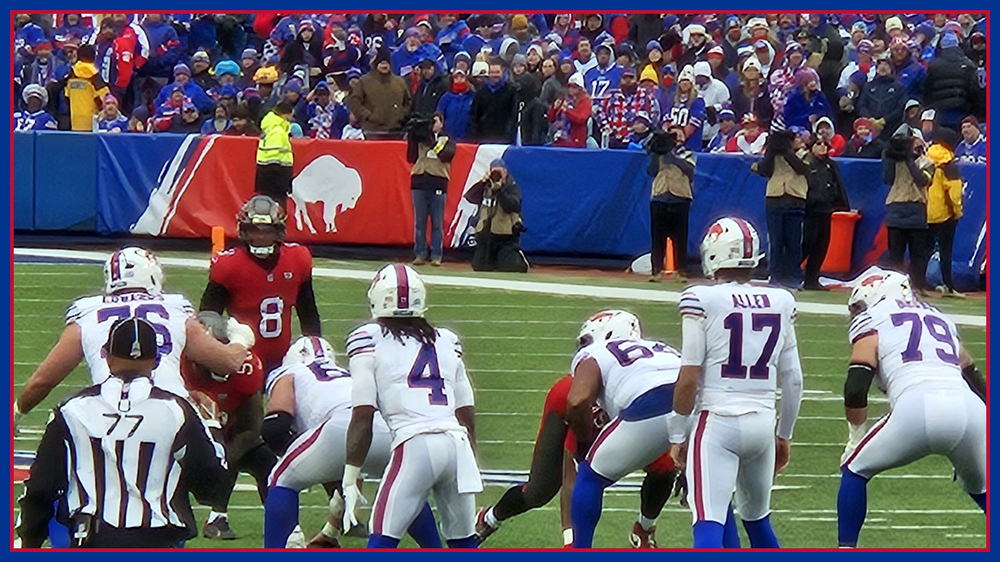

33 straight drives without allowing a touchdown. Buffalo's defense is the story now.
Buffalo's 31-12 win at the Jets ran its streak to 33 consecutive defensive drives without allowing a touchdown — the NFL's longest active streak and the franchise's longest since 1999, per the Bills' official recap. Then the offense scored three second-half touchdowns on seven plays. Film Room breaks down both halves of an 8-1 team.

The final score says the Buffalo Bills beat the New York Jets 31-12 on Sunday at MetLife Stadium, and the standings say Buffalo is 8-1 — its best start since 1991, per the Associated Press — with five straight wins and its first AFC East victory of the season, per the Bills' official recap. Film Room is here to tell you the score is burying the lede. The real number from Sunday is 33: dating back to the first half of the Week 8 win over Baltimore, Buffalo has now gone 33 consecutive defensive drives without allowing a touchdown, per the Bills' official recap — the longest active streak in the NFL and the franchise's longest since the 1999 season. Three weeks ago this defense was the problem with this team. Right now it is the story of this team.
Start with what Sunday actually looked like on tape. The Jets moved the ball — 376 total yards, per the New York Post's report card — and it bought them four Jason Sanders field goals and nothing else. New York reached the red zone twice and came away without a touchdown both times, per the Bills' official recap, and went 3-for-13 on third down, per the Post. Buffalo recorded four sacks, 12 quarterback hits and two takeaways, per the Democrat and Chronicle's 11-stats breakdown. And this is no longer a one-game heater: since the Week 7 bye, Buffalo is allowing the second-fewest yards per play on third down in the league (2.4), with opponents converting at just a 17.6 percent clip, and the ninth-fewest yards per play inside the red zone (2.3), per the Bills' official recap. Defensive coordinator Jim Leonhard's unit is not surviving drives anymore. It is ending them — early, and then again at the goal line.
The quarterback film tells the physical half of the story. Geno Smith finished 13-of-21 for 148 yards, per the Democrat and Chronicle, and Buffalo knocked him out of the game twice: first late in the first half, when he was hit high by linebacker Terrel Bernard and low by rookie edge rusher T.J. Parker and went into concussion evaluation, per the Democrat and Chronicle's live coverage, and then again in the third quarter on a blitz hit by safety Cole Bishop that left him with an ankle injury, per the New York Post. In between and after, rookie Cade Klubnik took his first career NFL snaps and finished 11-of-20 for 137 yards and an interception, per Reuters. Parker sacked his former Clemson teammate twice in a span of three plays in the fourth quarter, per the Democrat and Chronicle; rookie cornerback Davison Igbinosun intercepted Klubnik (then fumbled the return back, because even this defense's highlights come with a footnote); and when a Jets hook-and-lateral backfired late, rookie linebacker Kaleb Elarms-Orr recovered the fumble that set up the dagger. Per Buffalo Rumblings' recap, new safety Amani Hooker was an instant upgrade in his Bills debut, too. This is what a connected defense looks like: the pressure, the coverage and the blitz are all arriving from different names on the same snap.
The people inside it keep pointing at the same word: communication. "The communication has been at a high level," Bernard said, per the Bills' official recap, describing a unit where, in his words, you do not see guys running free while the defensive line gets home. Head coach Joe Brady went further, calling Sunday, per the same recap, "the best win we've had this season" — not because of the margin, but because of the week: a physical Monday night game in Minnesota, a return home in the early hours of Tuesday morning, and then straight back on the road for a division game. "There were so many excuses that could have been had this week and it's just not who they are," Brady said, per the Bills' recap. When a head coach calls a 19-point win over a 2-8 team his best of the year, he is not talking about the opponent. He is talking about the standard — and right now the defense is the unit setting it.
Then there is the second half, which is where the film turns from a grind into a sprint. Buffalo averaged just 4.3 yards per play in a first half that ended 10-6, per Buffalo Rumblings, and actually trailed in feel if not on the board when the Jets cut it to 10-9 early in the third quarter. What followed, per the Bills' official recap, was 21 points on 16 plays for 230 yards — an average of 14.4 yards per play in the second half, per Rumblings — built on scoring drives of four plays, two plays and one play, per head coach Joe Brady in the team recap. The four explosive gains did the damage: a 54-yard strike to Dalton Kincaid, the longest reception of his career, per the Bills' recap; a 21-yard James Cook run; a 45-yard touchdown bomb to DJ Moore — the healthy, off-the-injury-report version this site wrote about Saturday, catching four balls for 90 yards; and the 74-yard Cook touchdown that ended the afternoon. The Democrat and Chronicle's stat breakdown put it cleanest: Buffalo scored three second-half touchdowns on seven plays. Seven.
Cook's closer deserves its own paragraph, because the record book is starting to follow him around. He finished with 18 carries for 157 yards at 8.7 yards a pop, per Bills Wire, and the 74-yarder was the longest touchdown run of his career, hit 21.56 miles per hour on Next Gen Stats, produced 75 rushing yards over expected, and was Buffalo's longest rushing touchdown since LeSean McCoy's 75-yarder in 2016, per Bills Wire and the Bills' official recap. Per the Democrat and Chronicle's 11-stats breakdown, Cook is now just the fifth player in NFL history with at least 75 rushing yards and a rushing touchdown in eight consecutive games — a streak Bills PR, via Yardbarker, notes ties the longest such run since LaDainian Tomlinson in 2006. He sits second in the NFL in rushing yards through Week 10, per the Bills' recap. And Josh Allen quietly rewrote another line above him: 11-of-21 for 196 yards with a touchdown pass, an interception and two 1-yard rushing touchdowns, per the Democrat and Chronicle — enough to pass Peyton Manning for the most total touchdowns by a player through his first 10 seasons, with 323, per the Bills' official recap, a record Allen set in his ninth season. His review of the offense afterward, per the team recap: "We're not playing our best football right now." An 8-1 team whose quarterback says that out loud is a problem for everybody else.
Film Room keeps the receipts, so here are Sunday's costs, reported as they were reported. Cornerback Christian Benford, who entered the day questionable with a wrist injury, was ruled out during the game with a groin injury, per the Democrat and Chronicle. Nickel cornerback Dee Alford left in the second half with a concussion after being evaluated for a head injury and cleared to return earlier in the game, per the Associated Press via TSN. Linebacker Dorian Williams injured a calf in the fourth quarter, per the same AP report, and cornerback Maxwell Hairston was shaken up late before returning, per the Democrat and Chronicle. Buffalo also committed nine pre-snap penalties, seven of them accepted, per Athlon Sports' recap of the Locked On Bills discussion — the sloppiness Allen was talking about is on the film, too. None of those names has a designation yet; the week's first practice report will start that conversation. Next up, Buffalo finally comes home: the Miami Dolphins at Highmark Stadium on Sunday, Nov. 22 at 1 PM ET, per Bills Wire. The defense has not allowed a touchdown in 33 drives, the offense can now score three touchdowns in seven plays, and the Bills are 8-1 for the first time in 35 years. January football is being built in November, one drive at a time. Go Bills — and get the full Dolphins-week breakdown in your inbox every morning with The BNC Blitz.
The BNC Blitz is free: the day's Bills news, one stat that matters, and one take, every morning. Join to keep reading — and never miss the end of a story again.